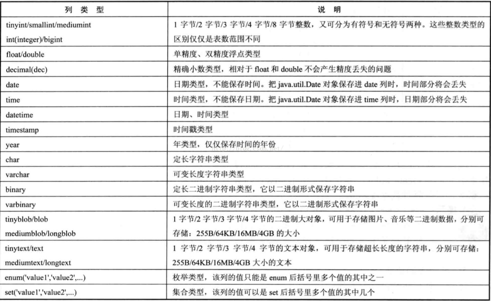

遇见MySQL
1.MySQL数据类型
1.1MySQL相关操作
配置好系统变量后，进入cmd
- 登录:
- mysql -uroot（用户） -p
- mysql -uroot（用户） -pxxx（密码）
- 退出:
- exit
- quit
- \q
- 登陆的同时打开指定数据库:mysql -uroot -p -D db_name
- 命令行结束后默认使用:
- ;
- \g
- 查询帮助:
- help
- \h
- ?+命令
- 取消当前命令执行:
- \c
常用SQL语句:
SELECT USER():得到登录的用户SELECT VERSION():得到MySQL的版本信息SELECT NOW():得到当前的日期时间SELECT DATABASE():得到当前打开的数据库
SQL语句规范：
- 常用MySQL的关键字需要大写，库名、表名、字段名称需要小写
- SQL语句支持折行操作，拆分的时候不能把完整单词拆开
- 数据库名称、表名称、字段名称不要使用MySQL的保留字。如果要使用，需要用反引号’’将其括起来
1.2.数据库相关操作
CREATE DATABASE|SCHEMA [IF NOT EXISTS]db_name [DEFAULT] CHARACTER SET [=] charset:创建数据库[IF NOT EXISTS]表示检查数据库名称是否存在[DEFAULT] CHARACTER SET [=] charset表示指定编码方式SHOW DATABASES|SCHEMAS:查看当前服务器下全部数据SHOW CREATE DATABASE db_name:查看数据库的详细信息ALTER DATABASE db_name [DEFAULT] CHARACTER SET [=] CHARSET:修改指定数据库的编码方式USE db_name:打开指定数据库SELECT DATABASE()|SCHEMA():得到当前打开数据库DROP DATABASE [IF EXISTS] db_name:删除指定的数据库[IF EXISTS]如果存在则删除SHOW WARNINGS:查看上一步警告
1.3.数据表相关操作
数据表是由行(row)和列(column)组成。每个数据表至少有一列，行可以有零行，一行或者多行组成。表名要求唯一，不要包含特殊字符，定义明确。
CREATE TABLE [IF NOT EXISTS]tbl_name(
字段名称 字段类型 [完整性约束条件]
字段名称 字段类型 [完整性约束条件]
...
)ENGINE=存储引擎 CHARset=编码方式;1.4.MySQL中的数据类型
数值型：
- 整数型
- 浮点数
- 定点数
字符串类型
CHAR效率高于VARCHAR，CHAR相当于空间换时间，VARCHAR时间换空间
CHAR默存储数据时，后面会用空格填充到指定长度；而在检索的时候回去掉后面的空格，VARCHAR检索的时候不进行填充，尾部的空格会留下
日期时间类型

1.5.创建用户数据表
# 创建数据库test
CREATE DATABASE IF NOT EXISTS test DEFAULT CHARCTER SET 'UTF-8';
# 打开test
USE test;
# 用户表 user
CREATE TABLE IF NOT EXISTS user(
id INT,
username VARCHAR(20),
password CHAR(32),
email VARCHAR(50),
age TINYINT,
card CHAR(18),
tel CHAR(11),
salary FLOAT(8,2),
married TINYINT(1),
addr VARCHAR(100),
sex ENUM('男','女','保密')
)ENGINE=INNODB CHARSET=UTF8;SHOW TABLES:查看当前数据库下已有数据表SHOW CREATE TABLE tbl_name:查看指定数据表的详细信息DESCRIBE tbl_name| DESCRIBE tbl_name|SHOW COLUMNS FROM tbl_name:查看表结构DROP TABLE [IF EXISTS] db_name:删除数据表INSERT db_name(字段名称...) VALUES(对应的值...):在数据表的指定字段插入值
1.6.完整性约束条件
- unsigned:无符号，没有负数，从0开始
- zerofill:零填充，当显示长度不够的时候可以使用前补0的效果填充至指定长度
- NOT NULL:非空约束，插入值的时候必须给字段赋值
- DEFAULT:默认值，如果插入记录没有赋值，就使用默认值
- PRIMARY KEY:主键，标识记录的唯一性。一个表只能有一个主键，自动停止为空
- UNIQUE KEY:唯一性，一个表可以有多个字段是唯一索引，值不能重复，但是NULL除外
- AUTO_INCREMENT:自动增长，只能用于数值列，而且配合索引所有
- FOREIGN KEY:外键约束
完整的用户表创建
-- 用户表user
CREATE TABLE IF NOT EXISTS `user`(
`id` INT UNSIGNED AUTO_INCREMENT KEY COMMENT '用户编号',
`username` VARCHAR(20) NOT NULL UNIQUE COMMENT '用户名',
`password` CHAR(32) NOT NULL COMMENT '密码',
`email` VARCHAR(50) NOT NULL UNIQUE COMMENT '邮箱',
`age` TINYINT UNSIGNED NOT NULL DEFAULT 18 COMMENT '年龄',
`sex` ENUM('男','女','保密') NOT NULL DEFAULT '保密' COMMENT '性别',
`tel` CHAR(11) NOT NULL UNIQUE COMMENT '电话',
`addr` VARCHAR(50) NOT NULL DEFAULT '北京' COMMENT '地址',
`card` CHAR(18) NOT NULL UNIQUE COMMENT '身份证号',
`married` TINYINT(1) NOT NULL DEFAULT 0 COMMENT '0代表未结婚，1代表已结婚',
`salary` FLOAT(8,2) NOT NULL DEFAULT 0 COMMENT '薪水'
)ENGINE=INNODB DEFAULT CHARSET=UTF8;
-- 测试布尔类型
CREATE TABLE test_bool(
id int,
married BOOL
);
CREATE TABLE test_bool1(
id int,
married BOOLEAN
);
2.MySQL表的管理
2.1.添加和删除字段操作
ALTER TABLE tbl_name ADD 字段名称 字段属性\[完整性约束条件][FIRST|AFTER 字段名称]: 添加字段ALTER TABLE tbl_name DROP 字段名称:删除字段
2.2.添加和删除默认值操作
ALTER TABLE tbl_name ALTER 字段名称 SET DEFAULT 默认值:添加默认值ALTER TABLE tbl_name ALTER 字段名称 DROP DEFAULT:删除默认值
2.3.MODIEY和CHANGE关键字使用
ALTER TABLE tbl_name MODIEY 字段名称 字段类型 \[字段属性] [FIRST|AFTER 字段名称]:修改字段类型、字段属性ALTER TABLE tbl_name CHANGE 原字段名称 新字段名称 字段类型 字段属性 [FIRST|AFTER 字段名称]:修改字段名称、字段类型、字段属性
2.4.主键和唯一索引操作
ALTER TABLE tbl_name ADD PRIMARY KEY(字段名称):添加主键ALTER TABLE tbl_name DROP PRIMARY KEY:删除主键
如果有自增的话，要MODIEY之后才能删除主键
ALTER TABLE tbl_name ADD UNIQUE KEY|INDEX index_name(字段名称):添加唯一ALTER TABLE tbl_name DROP index_name:删除唯一
2.5.重命名表的操作
ALTER TABLE tbl_name RENAME [TO|AS] new_tbl_name:修改数据表名称RENAME TABLE tbl_name TO new_tbl_name:修改数据表名称
2.6MyISAM存储引擎
默认MyISAM的表会在磁盘中产生3个文件：
- .frm:表结构
- .MYD:数据文件
- .MYI:索引文件
可以在创建表的时候指定数据文件和索引文件的存储位置，只有MyISAM表支持
DATA DIRECTORY [=]: 数据保存的绝对路径INDEX DIRECTORY [=]:索引文件保存的绝对路径
MyISAM单表最大支持的数据量为$2^{64}$次方条记录，每个表最多可以建立64个索引
如果是复合索引，每个复合索引最多包含16个列，索引值最大长度是1000B
MyISAM引擎的储存格式：
- 定长(FIXED静态)，是指字段中不包含VARCHAR/TEXT/BLOB
- 动态(DYNAMIC), 只要字段中包含VARCHAR/TEXT/BLOB
- 压缩(COMPRESSED)，mysampack创建
2.7InnoDB储存引擎
设计遵循ACID模型，支持事务，具有从服务崩溃中恢复的能力，能够最大限度保护用户数据：
- 原子性(Aromiocity)
- 一致性(Consistency)
- 隔离性(Isolation)
- 持久性(Durability)
支持行级锁，可以提升多用户并发时的读写性能
支持外键，保证数据的一致性和完整性
InnoDB拥有自己独立的缓冲池，常用的数据和索引都在缓存中
对于INSERT,UPDATE,DELETE操作，InnoDB会使用一种change buffering的机制来自动优化，还可以提供一致性的读，并且还能够缓存变更的数据，减少磁盘I/O，提高读写性能
创建InnoDB表之后会产生两个文件：
- .frm:表结构文件
- .ibd:数据和索引储存表空间
所有的表都需要创建主键，最后是配合AUTO_INCREMENT，也可以设置经常查询的列作为主键
3.MySQL数据管理
3.1MySQL数据操作
添加记录
INSERT [INTO] tbl_name[(col_name,...)] {VALUE|VALUES}(VALUES...):添加记录INSERT tbl_name VAULE(value...):不指定字段名称添加记录
-- 测试添加记录
CREATE DATABASE IF NOT EXISTS king DEFAULT CHARACTER SET 'UTF8';
USE king;
CREATE TABLE IF NOT EXISTS user(
id INT UNSIGNED AUTO_INCREMENT KEY COMMENT '编号',
username VARCHAR(20) NOT NULL UNIQUE COMMENT '用户名',
age TINYINT UNSIGNED DEFAULT 18 COMMENT '年龄',
email VARCHAR(50) NOT NULL DEFAULT 'imooc@qq.com' COMMENT '邮箱'
)ENGINE=INNODB CHARSET=UTF8;
-- 不指定字段名称
INSERT user VALUE(1,'king',24,'382771946@qq.com');
INSERT user VALUES(NULL,'queen',25,'queen@qq.com');
INSERT user VALUES(DEFAULT,'lily',26,'lily@qq.com');
-- 列出指定字段的形式
INSERT user(username,email) VALUES('rose','rose@qq.com');
INSERT user(age,email,id,username) VALUES(34,'imooc@qq.com',5,'imooc');
-- 一次插入3条记录
INSERT user VALUES(NULL,'a',DEFAULT,DEFAULT),
(NULL,'b',56,'b@qq.com'),
(NULL,'c',14,'c@qq.com');
-- INSERT ...SET 的形式
INSERT user SET username='d',age=45,email='d@qq.com';
-- INSERT SELECT
INSERT user(username) SELECT a FROM test;
修改记录
UPDATE tbl_name SET字段名称=值... [WHERE 条件]:修改记录，如果不添加条件，整个表中的记录都会被更新
删除记录
DELETE FROM tbl_name [WHERE 条件]:如果不添加条件，表中所有记录都被删除。不会重置AUTO_INCREMENT的值，可以通过ALTER语句将其重置为1TRUNCATE [TABLE] tbl_name:彻底清空数据表，会重置AUTO_INCREMENT的值
-- 测试更新语句
-- 修改第一个用户的信息 id=1
UPDATE user SET age=29 WHERE id=1;
-- 修改id=3的用户，username age email
UPDATE user SET age=47,email='lilys@qq.com',username='lilys' WHERE id=3;
-- 所有用户年龄+10
UPDATE user SET age=age+10;
-- 将id<=5的用户年龄改为-20，将邮箱改为默认值
UPDATE user SET age=age-20,email=DEFAULT WHERE id<=5;
-- 测试删除语句
-- 删除用户名为king
DELETE FROM user WHERE username='king';
-- 删除年龄为24的用户
DELETE FROM user WHERE age=24;
-- 删除表中所有记录
DELETE FROM user;
INSERT user VALUES(NULL,'queen',25,'queen@qq.com');
INSERT user VALUES(DEFAULT,'lily',26,'lily@qq.com');
查询记录
SELECT select_expr,... FROM tbl_name [WHERE 条件] [GROUP BY {col_name|position} HAVING 二次筛选] [ORDER BY {col_name|position|expr}] [ASC|DESC] [LIMIT 限制结果集的显示条数]SELECT * FROM tbl_name:查询表中所有记录SELECT 字段名称... FROM tbl_name:指定字段信息SELECT 字段名称... FROM db_name.tbl_name:库名.表名SELECT 字段名称 [AS] 别名名称,... FROM db_name.tbl_name:给字段起别名
-- 测试查询操作
CREATE TABLE user1(
id INT UNSIGNED AUTO_INCREMENT KEY,
username VARCHAR(20) NOT NULL UNIQUE COMMENT '编号',
age TINYINT UNSIGNED NOT NULL DEFAULT 18 COMMENT '年龄',
sex ENUM('男','女','保密') NOT NULL DEFAULT '保密' COMMENT '性别',
addr VARCHAR(20) NOT NULL DEFAULT '北京',
married TINYINT(1) NOT NULL DEFAULT 0 COMMENT '0代表未结婚，1代表已婚',
salary FLOAT(8,2) NOT NULL DEFAULT 0 COMMENT '薪水'
)ENGINE=INNODB CHARSET=UTF8;
INSERT user1 VALUES(1,'king',23,'男','北京',1,50000);
INSERT user1(username,age,sex,addr,married,salary) VALUES('queen',27,'女','上海',0,25000);
INSERT user1 SET username='imooc',age=31,sex='女',addr='北京',salary=40000;
INSERT user1 VALUES(NULL,'张三',38,'男','上海',0,15000),
(NULL,'张三风',38,'男','上海',0,15000),
(NULL,'张子怡',39,'女','北京',1,85000),
(NULL,'汪峰',42,'男','深圳',1,95000),
(NULL,'刘德华',58,'男','广州',0,115000),
(NULL,'吴亦凡',28,'男','北京',0,75000),
(NULL,'奶茶妹',18,'女','北京',1,65000),
(NULL,'刘嘉玲',36,'女','广州',0,15000);
-- 查询表中所有记录
SELECT * FROM user1;
-- username,addr,age
SELECT username,addr,age FROM user1;
-- 查询king数据库下user1表中的所有记录
SELECT * FROM king.user1;
-- 查询user1表中的id 编号 username 用户名 sex 性别
SELECT id AS '编号',username AS '用户名', sex AS '性别'
FROM user1;
SELECT id age,age id,username FROM user1;
-- 给表起别名
SELECT id,username FROM user1 AS u;
-- 测试表名.字段名
SELECT user1.id,user1.username,user1.age FROM user1 ;
SELECT u.id,u.username,u.addr,u.sex FROM user1 AS u;WHERE条件筛选
- 比较运算符: > >= < <= != <> <=>
- IS [NOT] NULL: 检测值是否为NULL或者NOT NULL
- 指定范围：[NOT] BETWEEN …AND
- 指定集合: [NOT]IN(值…)
- 逻辑运算符: AND OR
- 匹配字符: [NOT] LIKE %(任意长度的字符串) _(任意一个字符)
-- 测试WHERE 条件的比较运算符
-- 查询id,username,age id=5的用户
SELECT id,username,age FROM user1
WHERE id=5;
SELECT id,username,age FROM user1
WHERE id=50;
-- 添加desc字段 VARCHAR(100)
ALTER TABLE user1
ADD userDesc VARCHAR(100);
-- 更新id<=9的用户 userDesc='this is a test'
UPDATE user1 SET userDesc='this is a test'
WHERE id<=9;
-- 查询用户userDesc 为NULL的用户
SELECT id,username,age,userDesc FROM user1
WHERE userDesc=NULL;
-- 检测NULL值
SELECT id,username,age,userDesc FROM user1
WHERE userDesc<=>NULL;
-- IS [NOT] NULL检测NULL值
SELECT id,username,age,userDesc FROM user1
WHERE userDesc IS NULL;
-- 测试范围BETWEEN AND
-- 查询年龄在18~30之间的用户
SELECT id,username,age,sex FROM user1
WHERE age BETWEEN 18 AND 30;
-- 查询薪水在10000~50000之间的用户
SELECT id,username,age,salary FROM user1
WHERE salary BETWEEN 10000 AND 50000;
SELECT id,username,age,salary FROM user1
WHERE salary NOT BETWEEN 10000 AND 50000;
-- 测试指定集合 IN
-- 查询编号为1,3,5,7,9
SELECT id,username,age FROM user1
WHERE id IN(1,3,5,7,9,29,45,78);
SELECT id,username,age FROM user1
WHERE username IN('king','queen','lily','rose');
-- 测试逻辑运算符
-- 查询性别为男并且年龄>=20的用户
SELECT id,username,age,sex FROM user1
WHERE sex='男' AND age>=20;
-- id>=5 && age<=30
SELECT id,username,age,sex FROM user1
WHERE id>=5 AND age<=30;
SELECT id,username,age,sex FROM user1
WHERE id>=5 AND age<=30 AND sex='男';
-- 要求sex='女' 并且 addr='北京'
SELECT id,username,age,sex,addr FROM user1
WHERE sex='女' AND addr='北京';
-- 查询薪水范围在60000~10000并且性别为男 addr='北京'
SELECT id,username,age,sex,salary,addr FROM user1
WHERE salary BETWEEN 60000 AND 100000 AND sex='男' AND addr='北京';
-- 查询id=1 或者 用户名为queen
SELECT id,username,age FROM user1
WHERE id=1 OR username='queen';
-- 测试模糊查询
SELECT id,username,age FROM user1
WHERE username='king';
SELECT id,username,age FROM user1
WHERE username LIKE 'king';
-- 要求用户名中包含三
SELECT id,username,age,sex FROM user1
WHERE username LIKE '%三%';
-- 用户名中包含n
SELECT id,username,age FROM user1
WHERE username LIKE '%in%';
-- 要求查询出姓张的用户
SELECT id,username,age FROM user1
WHERE username LIKE '张%';
-- 查询以风结尾的用户
SELECT id,username,age FROM user1
WHERE username LIKE '%风';
-- 用户名长度为三位的用户
SELECT id,username,age,sex FROM user1
WHERE username LIKE '___';
SELECT id,username,age,sex FROM user1
WHERE username LIKE '张_';
SELECT id,username,age,sex FROM user1
WHERE username LIKE '张_%';3.2GROUP BY 对记录进行分组
GROUP BY把值相同放到一个组中，最终查询出的结果只会显示组中一条记录
分组配合GROUP _CONCAT()查看组中某个字段的详细信息
配合聚合函数使用：
COUNT():统计记录总数COUNT(字段名称)，字段中的值为NULL，不统计进来COUNT(*)会统计NULL值
SUM():求和MAX():求最大值MIN():求最小值AVG():求平均值
配合WITH ROLLUP关键使用，会在记录末尾添加一条记录，是上面所有记录总和
HAVING字句对分组结果进行二次筛选
-- 测试分组
-- 按照性别分组sex
SELECT id,username,age,sex FROM user1
GROUP BY sex;
-- 按照addr分组
SELECT username,age,sex,addr FROM user1
GROUP BY addr;
-- 按照性别分组，查询组中的用户名有哪些
SELECT GROUP_CONCAT(username),age,sex,addr FROM user1
GROUP BY sex;
SELECT GROUP_CONCAT(username),age,sex,GROUP_CONCAT(addr) FROM user1
GROUP BY sex;
-- 测试COUNT()
SELECT COUNT(*) FROM user1;
SELECT COUNT(id) FROM user1;
-- 按照sex分组，得到用户名详情，并且分别组中的总人数
SELECT sex,GROUP_CONCAT(username) AS usersDetail,COUNT(*) AS totalUsers FROM user1
GROUP BY sex;
-- 按照addr分组，得到用户名的详情，总人数，得到组中年龄的总和，年龄的最大值、最小值、平均值和
SELECT addr,
GROUP_CONCAT(username) AS usersDetail,
COUNT(*) AS totalUsers,
SUM(age) AS sum_age,
MAX(age) AS max_age,
MIN(age) AS min_age,
AVG(age) AS avg_age
FROM user1
GROUP BY addr;
-- 按照sex分组，统计组中总人数、用户名详情，得到薪水总和，薪水最大值、最小值、平均值
SELECT sex,
GROUP_CONCAT(username) AS usersDetail,
COUNT(*) AS totalUsers,
SUM(salary) AS sum_salary,
MAX(salary) AS max_salary,
MIN(salary) AS min_salary,
AVG(salary) AS avg_salary
FROM user1
GROUP BY sex;
SELECT GROUP_CONCAT(username) AS usersDetail,
COUNT(*) AS totalUsers
FROM user1
GROUP BY sex
WITH ROLLUP;
-- 按照字段的位置来分组
SELECT id,sex,
GROUP_CONCAT(username) AS usersDetail,
COUNT(*) AS totalUsers,
SUM(salary) AS sum_salary,
MAX(salary) AS max_salary,
MIN(salary) AS min_salary,
AVG(salary) AS avg_salary
FROM user1
GROUP BY 2;
-- 查询age>=30的用户并且按照sex分组
SELECT sex,GROUP_CONCAT(username) AS usersDetail,
COUNT(*) AS totalUsers
FROM user1
WHERE age>=30
GROUP BY sex;
-- 按照addr分组，统计总人数
SELECT addr,
GROUP_CONCAT(username) AS usersDetail,
COUNT(*) AS totalUsers
FROM user1
GROUP BY addr;
-- 对于分组结果进行二次筛选，条件是组中总人数>=3
SELECT addr,
GROUP_CONCAT(username) AS usersDetail,
COUNT(*) AS totalUsers
FROM user1
GROUP BY addr
HAVING COUNT(*)>=3;
SELECT addr,
GROUP_CONCAT(username) AS usersDetail,
COUNT(*) AS totalUsers
FROM user1
GROUP BY addr
HAVING totalUsers>=3;
-- 按照addr分组，
SELECT addr,
GROUP_CONCAT(username) AS usersDetail,
COUNT(*) AS totalUsers,
SUM(salary) AS sum_salary,
MAX(salary) AS max_salary,
MIN(salary) AS min_salary,
AVG(salary) AS avg_salary
FROM user1
GROUP BY addr;
-- 要求平均薪水>=40000
SELECT addr,
GROUP_CONCAT(username) AS usersDetail,
COUNT(*) AS totalUsers,
SUM(salary) AS sum_salary,
MAX(salary) AS max_salary,
MIN(salary) AS min_salary,
AVG(salary) AS avg_salary
FROM user1
GROUP BY addr
HAVING avg_salary>=40000;3.3ORDER BY实现排序
ORDER BY排序：
ORDER BY字段名称 ASC|DESC
-- 测试排序
-- 按照id降序排列
SELECT id,username,age
FROM user1
ORDER BY id DESC;
-- 按照age升序
SELECT id,username,age
FROM user1
ORDER BY age ;
-- 按照多个字段排序
SELECT id,username,age
FROM user1
ORDER BY age ASC,id ASC;
-- 测试条件+排序
SELECT id,username,age
FROM user1
WHERE age>=30;
SELECT id,username,age
FROM user1
WHERE age>=30
ORDER BY age DESC;
-- 实现随机记录
SELECT id,username,age
FROM user1
ORDER BY RAND();
3.4LIMIT限制结果集的显示条数
LIMIT限制结果集显示条数：
- LIMIT值: 显示结果集的前几条记录
- LIMIT offset,row_count: 从offset，显示几条记录
-- 测试LIMIT语句
-- 显示结果集的前5条记录
SELECT id,username,age,sex
FROM user1
LIMIT 5;
SELECT id,username,age,sex
FROM user1
LIMIT 0,5;
-- 显示前3条记录
SELECT id,username,age,sex
FROM user1
LIMIT 0,3;
SELECT id,username,age,sex
FROM user1
LIMIT 3,3;
-- 更新前3条记录，将age+5
UPDATE user1 SET age=age+5 LIMIT 3;
-- 按照id降序排列，更新前三条记录，将age-10
UPDATE user1 SET age=age-10 ORDER BY id DESC LIMIT 3;
-- 删除前三条记录
DELETE FROM user1
LIMIT 3;
DELETE FROM user1
ORDER BY id DESC
LIMIT 3;
-- 测试完整SELECT 语句的形式
SELECT addr,
GROUP_CONCAT(username) AS usersDetail,
COUNT(*) AS totalUsers,
SUM(age) AS sum_age,
MAX(age) AS max_age,
MIN(age) AS min_age,
AVG(age) AS avg_age
FROM user1
WHERE id>=2
GROUP BY addr;
SELECT addr,
GROUP_CONCAT(username) AS usersDetail,
COUNT(*) AS totalUsers,
SUM(age) AS sum_age,
MAX(age) AS max_age,
MIN(age) AS min_age,
AVG(age) AS avg_age
FROM user1
WHERE id>=2
GROUP BY addr
HAVING totalUsers>=2;
SELECT addr,
GROUP_CONCAT(username) AS usersDetail,
COUNT(*) AS totalUsers,
SUM(age) AS sum_age,
MAX(age) AS max_age,
MIN(age) AS min_age,
AVG(age) AS avg_age
FROM user1
WHERE id>=2
GROUP BY addr
HAVING totalUsers>=2
ORDER BY totalUsers ASC;
SELECT addr,
GROUP_CONCAT(username) AS usersDetail,
COUNT(*) AS totalUsers,
SUM(age) AS sum_age,
MAX(age) AS max_age,
MIN(age) AS min_age,
AVG(age) AS avg_age
FROM user1
WHERE id>=2
GROUP BY addr
HAVING totalUsers>=2
ORDER BY totalUsers ASC
LIMIT 0,2;3.5多表联查
多表查询：
- 笛卡尔积的形式
- 内连接的形式：
SELECT 字段名称,... FROM tbl_name1 INNER JOIN tbl_name2 ON 链接条件，查询两个表中符合连接条件的记录 - 外连接的形式:
- 左外连接：
SELECT 字段名称,... FROM tbl_name1 LEFT [OUTER] JOIN tbl_name2 ON 条件，先显示左表中的全部记录，再去右表中查询复合记录，不符合的用NULL代替 - 右外连接：
SELECT 字段名称,... FROM tbl_name1 RIGHT [OUTER] JOIN tbl_name2 ON 条件，先显示右表中的全部记录，再去左表中查询复合记录，不符合的用NULL代替
- 左外连接：
CREATE DATABASE IF NOT EXISTS test2 DEFAULT CHARACTER SET 'UTF8';
USE test2;
CREATE TABLE emp(
id INT UNSIGNED AUTO_INCREMENT KEY,
username VARCHAR(20) NOT NULL UNIQUE COMMENT '编号',
age TINYINT UNSIGNED NOT NULL DEFAULT 18 COMMENT '年龄',
sex ENUM('男','女','保密') NOT NULL DEFAULT '保密' COMMENT '性别',
addr VARCHAR(20) NOT NULL DEFAULT '北京',
depId TINYINT UNSIGNED NOT NULL COMMENT '部门对应的编号'
)ENGINE=INNODB CHARSET=UTF8;
INSERT emp(username,age,depId) VALUES('king',24,1),
('queen',25,2),
('imooc',26,1),
('lily',27,1),
('rose',28,3),
('john',29,3);
INSERT emp(username,age,depId) VALUES('测试用户',39,6);
CREATE TABLE dep(
id TINYINT UNSIGNED AUTO_INCREMENT KEY,
depName VARCHAR(50) NOT NULL UNIQUE,
depDesc VARCHAR(100) NOT NULL DEFAULT ''
)ENGINE=INNODB CHARSET=UTF8;
INSERT dep(depName,depDesc) VALUES('PHP教学部','研发PHP课件'),
('JAVA教学部','研发JAVA课件'),
('WEB前端教学部','研发WEB前端课件'),
('IOS教学部','研发IOS课件');
-- 查询 emp id username age 部门名称 dep depName
SELECT emp.id,emp.username,emp.age,dep.depName FROM emp,dep;
SELECT e.id,e.username,e.age,d.depName
FROM emp AS e
INNER JOIN dep AS d
ON e.depId=d.id;
-- 查询emp id username age addr dep id depName depDesc
SELECT e.id,e.username,e.age,e.addr,
d.id,d.depName,d.depDesc
FROM dep AS d
JOIN emp AS e
ON d.id=e.depId;
-- 测试左外连接
SELECT e.id,e.username,e.age,d.depName,d.depDesc
FROM emp AS e
LEFT OUTER JOIN dep AS d
ON e.depId=d.id;
-- 测试右外连接
SELECT e.id,e.username,e.age,d.depName,d.depDesc
FROM emp AS e
RIGHT JOIN dep AS d
ON e.depId=d.id;复合查询操作案例：
-- 创建管理员表
CREATE TABLE user(
id TINYINT UNSIGNED AUTO_INCREMENT KEY,
username VARCHAR(20) NOT NULL UNIQUE,
email VARCHAR(50) NOT NULL DEFAULT '382771946@qq.com',
proName VARCHAR(10) NOT NULL DEFAULT '北京'
);
INSERT user(username,proName) VALUES('a','北京'),
('b','哈尔滨'),
('c','上海'),
('d','深圳'),
('e','广州'),
('f','重启');
-- 创建省份表
CREATE TABLE provinces(
id TINYINT UNSIGNED AUTO_INCREMENT KEY,
proName VARCHAR(10) NOT NULL UNIQUE
);
INSERT provinces(proName) VALUES('北京'),
('上海'),
('深圳');
--
CREATE TABLE user(
id TINYINT UNSIGNED AUTO_INCREMENT KEY,
username VARCHAR(20) NOT NULL UNIQUE,
email VARCHAR(50) NOT NULL DEFAULT '382771946@qq.com',
proId TINYINT UNSIGNED NOT NULL
);
INSERT user(username,proId) VALUES('a',1);
INSERT user(username,proId) VALUES('b',1);
INSERT user(username,proId) VALUES('c',1);
INSERT user(username,proId) VALUES('d',2);
INSERT user(username,proId) VALUES('e',3);
INSERT user(username,proId) VALUES('f',1);
INSERT user(username,proId) VALUES('g',1);
-- 查询user id ,username provinces proName
SELECT u.id,u.username,p.proName
FROM user AS u
JOIN provinces AS p
ON u.proId=p.id;
-- 创建省份表
CREATE TABLE provinces(
id TINYINT UNSIGNED AUTO_INCREMENT KEY,
proName VARCHAR(10) NOT NULL UNIQUE
);
-- 管理员admin id username email proId
CREATE TABLE admin(
id TINYINT UNSIGNED AUTO_INCREMENT KEY,
username VARCHAR(20) NOT NULL UNIQUE,
email VARCHAR(50) NOT NULL DEFAULT '382771946@qq.com',
proId TINYINT UNSIGNED NOT NULL
);
INSERT admin(username,proId) VALUES('king',1);
INSERT admin(username,proId) VALUES('queen',2);
-- 商品分类cate id cateName cateDesc
CREATE TABLE cate(
id TINYINT UNSIGNED AUTO_INCREMENT KEY,
cateName VARCHAR(50) NOT NULL UNIQUE,
cateDesc VARCHAR(100) NOT NULL DEFAULT ''
);
INSERT cate(cateName) VALUES('母婴');
INSERT cate(cateName) VALUES('服装');
INSERT cate(cateName) VALUES('电子');
-- 商品表products id productName, price,cateId
CREATE TABLE products(
id INT UNSIGNED AUTO_INCREMENT KEY,
productName VARCHAR(50) NOT NULL UNIQUE,
price FLOAT(8,2) NOT NULL DEFAULT 0,
cateId TINYINT UNSIGNED NOT NULL,
adminId TINYINT UNSIGNED NOT NULL
);
INSERT products(productName,price,cateId,adminId)
VALUES('iphone9',9888,3,1),
('adidas',388,2,2),
('nike',888,2,2),
('奶瓶',288,1,1);
-- 查询products id productName price --- cate cateName
SELECT p.id,p.productName,p.price,c.cateName
FROM products AS p
JOIN cate AS c
ON p.cateId=c.id;
-- 查询管理员 id username email -- provinces proName
SELECT a.id,a.username,a.email,p.proName
FROM admin AS a
JOIN provinces AS p
ON a.proId=p.id;
-- 查询 products id productName price
-- cate cateName
-- admin username email
SELECT p.id,p.productName,p.price,c.cateName,a.username,a.email
FROM products AS p
JOIN admin AS a
ON p.adminId=a.id
JOIN cate AS c
ON p.cateId=c.id
WHERE p.price<1000
ORDER BY p.price DESC
LIMIT 0,2;3.6外键约束
外键作用是保持数据的一致性和完整性，只有InnoDB储存引擎支持外键
创建外键:
- 建表时创建外键:
[CONSTRAINT 外键名称] FOREIGN KEY(字段名称) REFERENCES 主表(字段名称)- 子表的外键字段和主表字段类型要相似。如果是数值型要求一致，并且无符号也要求一致；如果是字符类型要求一致，长度可以不同。
- 如果外键字段没有创建索引，MySQL会自动添加索引
- 子表的外键关联必须是父表的主键
- 动态删除外键:
ALTER TABLE tbl_name DROP FOREIGN KEY fk_name - 动态添加外键:
ALTER TABLE tbl_name ADD [CONSTRAINT 外键名称] FOREIGN KEY (外键字段) REFERENCES 主表(主键字段) - 外键约束的参照操作:
CASCADE:从父表删除或更新，子表也跟着删除或者更新，级联的操作- SET NULL`:从父表删除或者更新，并设置子表的外键列为NULL
NO ACTION|RESTRICT:拒绝对父表进行更新或者删除操作
-- 测试外键
-- 新闻分类表 news_cate
CREATE TABLE news_cate(
id TINYINT UNSIGNED AUTO_INCREMENT KEY,
cateName VARCHAR(50) NOT NULL UNIQUE,
cateDesc VARCHAR(100) NOT NULL DEFAULT ''
);
-- 新闻表 news
CREATE TABLE news(
id INT UNSIGNED AUTO_INCREMENT KEY,
title VARCHAR(100) NOT NULL UNIQUE,
content VARCHAR(1000) NOT NULL,
cateId TINYINT UNSIGNED NOT NULL
);
INSERT news_cate(cateName) VALUES('国内新闻'),
('国际新闻'),
('娱乐新闻'),
('体育新闻');
INSERT news(title,content,cateId) VALUES('a1','aaaa1',1),
('a2','aaaa2',1),
('a3','aaaa3',4),
('a4','aaaa4',2),
('a5','aaaa5',3);
-- 查询news id title content
-- news_cate cateName
SELECT n.id,n.title,n.content,c.cateName
FROM news AS n
JOIN news_cate AS c
ON n.cateId=c.id;
INSERT news(title,content,cateId) VALUES('a6','aaaa6',45);
-- 添加外键
-- 新闻分类表 news_cate
CREATE TABLE news_cate(
id TINYINT UNSIGNED AUTO_INCREMENT KEY,
cateName VARCHAR(50) NOT NULL UNIQUE,
cateDesc VARCHAR(100) NOT NULL DEFAULT ''
)ENGINE=INNODB;
-- 新闻表 news
CREATE TABLE news(
id INT UNSIGNED AUTO_INCREMENT KEY,
title VARCHAR(100) NOT NULL UNIQUE,
content VARCHAR(1000) NOT NULL,
cateId TINYINT UNSIGNED NOT NULL,
FOREIGN KEY(cateId) REFERENCES news_cate(id)
)ENGINE=INNODB;
INSERT news_cate(cateName) VALUES('国内新闻'),
('国际新闻'),
('娱乐新闻'),
('体育新闻');
INSERT news(title,content,cateId) VALUES('a1','aaaa1',1),
('a2','aaaa2',1),
('a3','aaaa3',4),
('a4','aaaa4',2),
('a5','aaaa5',3);
-- 测试非法记录
INSERT news(title,content,cateId) VALUES('b1','bbbb1',8);
-- 测试删除父表中的记录 和删除父表
DELETE FROM news_cate WHERE id=1;
UPDATE news_cate SET id=10 WHERE id=1;
INSERT news_cate(cateName) VALUES('教育新闻');
-- 将教育新闻 改成教育
UPDATE news_cate SET cateName='教育' WHERE id=5;
UPDATE news_cate SET id=50 WHERE cateName='教育';
-- 添加外键名称
-- 新闻分类表 news_cate
CREATE TABLE news_cate(
id TINYINT UNSIGNED AUTO_INCREMENT KEY,
cateName VARCHAR(50) NOT NULL UNIQUE,
cateDesc VARCHAR(100) NOT NULL DEFAULT ''
)ENGINE=INNODB;
-- 新闻表 news
CREATE TABLE news(
id INT UNSIGNED AUTO_INCREMENT KEY,
title VARCHAR(100) NOT NULL UNIQUE,
content VARCHAR(1000) NOT NULL,
cateId TINYINT UNSIGNED NOT NULL,
CONSTRAINT cateId_fk_newsCate FOREIGN KEY(cateId) REFERENCES news_cate(id)
)ENGINE=INNODB;
-- 删除外键
ALTER TABLE news
DROP FOREIGN KEY cateId_fk_newsCate;
-- 添加外键
ALTER TABLE news
ADD FOREIGN KEY(cateId) REFERENCES news_cate(id);
-- 删除外键
ALTER TABLE news
DROP FOREIGN KEY news_ibfk_1;
ALTER TABLE news
ADD CONSTRAINT cateId_fk_newsCate FOREIGN KEY(cateId) REFERENCES news_cate(id);
INSERT news_cate(cateName) VALUES('国内新闻'),
('国际新闻'),
('娱乐新闻'),
('体育新闻');
INSERT news(title,content,cateId) VALUES('a1','aaaa1',1),
('a2','aaaa2',1),
('a3','aaaa3',4),
('a4','aaaa4',2),
('a5','aaaa5',8);
ALTER TABLE news
ADD FOREIGN KEY(cateId) REFERENCES news_cate(id);
-- 指定级联操作 DELETE CASCADE UPDATE CASCADE
ALTER TABLE news
ADD FOREIGN KEY(cateId) REFERENCES news_cate(id)
ON DELETE CASCADE ON UPDATE CASCADE;
3.7子查询使用
子查询: SELECT 字段名称 FROM tbl_name WHERE col_name FORM tbl_name
内层语句查询的结果可以做为外层语句查询的条件。
由IN引发的子查询
由比较运算符引发的子查询
由EXISTS引发的子查询
ANY SOME ALL
联合查询:
- UNION:
SELECT 字段名称 ,...FROM tbl_name1 UNION SELECT 字段名称...FROM tbl_name2 - UNION ALL:
SELECT 字段名称,... FROM tbl_name1 UNION ALL SELECT 字段名称... FROM tbl_name2
-- 测试子查询
-- 测试由IN引发的子查询
SELECT * FROM emp
WHERE depId IN (SELECT id FROM dep);
SELECT * FROM emp
WHERE depId NOT IN (SELECT id FROM dep);
-- 学员stu
CREATE TABLE stu(
id TINYINT UNSIGNED AUTO_INCREMENT KEY,
username VARCHAR(20) NOT NULL UNIQUE,
score TINYINT UNSIGNED NOT NULL
);
INSERT stu(username,score) VALUES('king',95),
('queen',75),
('zhangsan',69),
('lisi',78),
('wangwu',87),
('zhaoliu',88),
('tianqi',98),
('ceshi',99),
('tiancai',50);
-- 分数级别level
CREATE TABLE level(
id tinyint UNSIGNED AUTO_INCREMENT KEY,
score TINYINT UNSIGNED COMMENT '分数'
);
INSERT level(score) VALUES(90),(80),(70);
-- 查询出成绩优秀的学员
SELECT score FROM level WHERE id=1;
SELECT id,username,score FROM stu
WHERE score>=(SELECT score FROM level WHERE id=1);
-- 查询出没有得到评级的学员
SELECT id,username,score FROM stu
WHERE score<=(SELECT score FROM level WHERE id=3);
-- 由EXISTS 引发的子查询
SELECT * FROM emp WHERE EXISTS (SELECT depName FROM dep WHERE id=10);
SELECT * FROM emp WHERE EXISTS (SELECT depName FROM dep WHERE id=1);
-- 带有ANY SOME ALL关键字的子查询
SELECT * FROM stu
WHERE score>= ANY(SELECT score FROM level);
SELECT * FROM stu
WHERE score>= SOME(SELECT score FROM level);
SELECT * FROM stu
WHERE score>= ALL(SELECT score FROM level);
SELECT * FROM stu
WHERE score< ALL(SELECT score FROM level);
SELECT * FROM stu
WHERE score=ANY(SELECT score FROM level);
SELECT * FROM stu
WHERE score!=ALL(SELECT score FROM level);
-- 创建一个user1表,id username
CREATE TABLE user1(
id int UNSIGNED AUTO_INCREMENT KEY,
username VARCHAR(20)
)SELECT id,username FROM emp;
-- 将user表中的用户名写入到user1表中
INSERT user1(username) SELECT username FROM user;
-- 将stu表中的tiancai用户名添加到user2表中
INSERT user2 SET username=(SELECT username FROM stu WHERE id=9);
-- 去掉字段的重复值
SELECT DISTINCT(username) FROM user2;
-- 将user1和user2数据合并到一起
SELECT * FROM user1
UNION
SELECT * FROM user2;
3.8无限级分类数据表
-- 测试自身连接
CREATE TABLE cate(
id SMALLINT UNSIGNED AUTO_INCREMENT KEY,
cateName VARCHAR(100) NOT NULL UNIQUE,
pId SMALLINT UNSIGNED NOT NULL DEFAULT 0
);
INSERT cate(cateName,pId) VALUES('服装',0);
INSERT cate(cateName,pId) VALUES('数码',0);
INSERT cate(cateName,pId) VALUES('箱包',0);
INSERT cate(cateName,pId) VALUES('男装',1);
INSERT cate(cateName,pId) VALUES('女装',1);
INSERT cate(cateName,pId) VALUES('内衣',1);
INSERT cate(cateName,pId) VALUES('电视',2);
INSERT cate(cateName,pId) VALUES('冰箱',2);
INSERT cate(cateName,pId) VALUES('洗衣机',2);
INSERT cate(cateName,pId) VALUES('爱马仕',3);
INSERT cate(cateName,pId) VALUES('LV',3);
INSERT cate(cateName,pId) VALUES('GUCCI',3);
INSERT cate(cateName,pId) VALUES('夹克',4);
INSERT cate(cateName,pId) VALUES('衬衫',4);
INSERT cate(cateName,pId) VALUES('裤子',4);
INSERT cate(cateName,pId) VALUES('液晶电视',10);
INSERT cate(cateName,pId) VALUES('等离子电视',10);
INSERT cate(cateName,pId) VALUES('背投电视',10);
-- 查询所有的分类信息，并且得到其父分类
SELECT s.id,s.cateName AS sCateName,p.cateName AS pCateName
FROM cate AS s
LEFT JOIN cate AS p
ON s.pId=p.id;
-- 查询所有的分类及其子分类
SELECT p.id,p.cateName AS pCateName,s.cateName AS sCateName
FROM cate AS s
RIGHT JOIN cate AS p
ON s.pId=p.id;
-- 查询所有的分类并且得到子分类的数目
SELECT p.id,p.cateName AS pCateName,COUNT(s.cateName) AS count
FROM cate AS s
RIGHT JOIN cate AS p
ON s.pId=p.id
GROUP BY p.cateName
ORDER BY id ASC;
sCate 表
id | cateName | pId |
+----+-----------------+-----+
| 1 | 服装 | 0 |
| 2 | 数码 | 0 |
| 3 | 玩具 | 0 |
| 4 | 男装 | 1 |
| 5 | 女装 | 1 |
| 6 | 内衣 | 1 |
| 10 | 电视 | 2 |
| 11 | 冰箱 | 2 |
| 12 | 洗衣机 | 2 |
| 13 | 爱马仕 | 3 |
| 14 | LV | 3 |
| 15 | GUCCI | 3 |
| 16 | 夹克 | 4 |
| 17 | 衬衫 | 4 |
| 18 | 裤子 | 4 |
| 19 | 液晶电视 | 10 |
| 20 | 等离子电视 | 10 |
| 21 | 背投电视 | 10
pCate
id | cateName | pId |
+----+-----------------+-----+
| 1 | 服装 | 0 |
| 2 | 数码 | 0 |
| 3 | 玩具 | 0 |
| 4 | 男装 | 1 |
| 5 | 女装 | 1 |
| 6 | 内衣 | 1 |
| 10 | 电视 | 2 |
| 11 | 冰箱 | 2 |
| 12 | 洗衣机 | 2 |
| 13 | 爱马仕 | 3 |
| 14 | LV | 3 |
| 15 | GUCCI | 3 |
| 16 | 夹克 | 4 |
| 17 | 衬衫 | 4 |
| 18 | 裤子 | 4 |
| 19 | 液晶电视 | 10 |
| 20 | 等离子电视 | 10 |
| 21 | 背投电视 | 10
4.MySQL常用函数
4.1数学函数
CEIL():进1取整FLOOR():舍掉小数部分ROUND():四舍五入TRUNCATE():截取小数点后几位MOD():取余数ABS():取绝对值POWER():幂指数PI():圆周率RAND():随机数SIGN(X):符号函数EXP():计算以e为底的指数
4.2字符串函数
-- 测试字符串函数
-- CHAR_LENGTH():得到字符串的字符数
SELECT CHAR_LENGTH('abc');
-- LENGTH():返回字符串的长度
SELECT LENGTH('abc');
-- CONCAT(s1,s2,....):将字符串合并成一个字符串
SELECT CONCAT('a','b','c');
-- 如果字符串中包含NULL，返回拼接结果就是NULL
SELECT CONCAT('a','b','c',null);
-- CONCAT_WS(x,s1,s2,s2....)：以指定分隔符拼接字符串
SELECT CONCAT_WS('-','a','b','c');
-- 如果null在拼接的内容中，则转化成空字符串
SELECT CONCAT_WS('-','a','b','c',null);
-- 如果分隔符为null，拼接的结果为null
SELECT CONCAT_WS(null,'a','b','c');
-- 将字符串转换成大写或者小写 UPPER()| UCASE() LOWER()|LCASE()
SELECT UPPER('hello king'),UCASE('hello imooc'),LOWER('HELLO ADMIN'),LCASE('HELLO EVERYBODY');
-- 字符串的反转REVERSE()
SELECT REVERSE('abc');
-- LEFT()|RIGHT():返回字符串的前几个字符或者后几个字符
SELECT LEFT('hello',2),RIGHT('hello',2);
-- LPAD()|RPAD():用字符串填充到指定长度
SELECT LPAD('abc',10,'?');
SELECT RPAD('abc',10,'!');
-- 去掉字符串两端的空格TRIM()|LTRIM()|RTRIM():
SELECT CONCAT('*',TRIM(' abc '),'*'),CONCAT('*',LTRIM(' abc '),'*'),CONCAT('*',RTRIM(' abc '),'*');
-- REPEAT():重复指定的次数
SELECT REPEAT('hello',3);
-- REPLACE():字符串
SELECT REPLACE('hello king','king','queen');
-- 截取字符串SUBSTRING
SELECT SUBSTRING('abcdef',1,3);
-- 比较字符串
SELECT STRCMP('a','b');
4.3日起时间函数
-- 测试日期时间函数
-- 返回当前日期
SELECT CURDATE(),CURRENT_DATE();
-- 返回当前时间
SELECT CURTIME(),CURRENT_TIME();
-- 返回当前的日期时间
SELECT NOW(),CURRENT_TIMESTAMP(),SYSDATE();
-- 返回日期中的月份和月份的名称
SELECT MONTH('2017-02-19');
SELECT MONTH(CURDATE()),MONTHNAME(CURDATE());
-- 返回星期几
SELECT DAYNAME(NOW());
-- 返回一周内的第几天,0代表星期一
SELECT DAYOFWEEK(NOW());
SELECT WEEK(NOW());
SELECT YEAR(NOW()),MONTH(NOW()),DAY(NOW()),HOUR(NOW()),MINUTE(NOW()),SECOND(NOW());
-- DATEDIFF()计算两个日期相差的天数
SELECT DATEDIFF('2020-03-06','2020-03-02');
参考
- 《MySQL必知必会》
- 慕课网